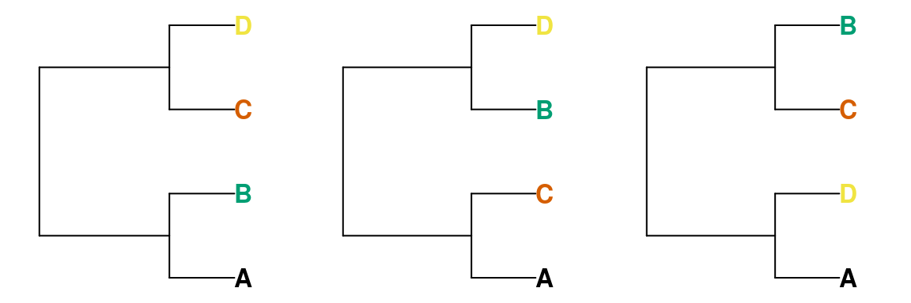
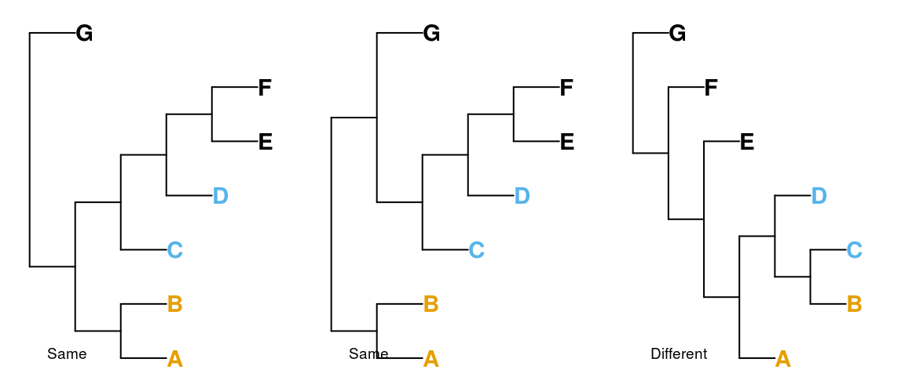

vignettes/Tree-distance-metrics.Rmd
Tree-distance-metrics.RmdA number of metrics area available to quantify the similarity between two undirected topologies (i.e. unrooted trees with no edge lengths), many of which are implemented in the phangorn function treedist.
The subtree pruning and regrafting (SPR) distance [Penny & Hendy (1985); SPR.dist] counts the number of SPR rearrangements necessary to transform Tree A into Tree B.
The length of a path from one tip to another in a tree is the number of edges within the tree that must be crossed to navigate from one tip to the other.
Given two trees, is possible to calculate the difference in path length between each pair of tips.
The path difference metric [Steel & Penny (1993); path.dist] is the square root of the sum of squares of each of these differences.
The related nodal distance (Bluis & Shin, 2003) is not considered further here.
The Robinson-Foulds (RF or ‘partition’) metric [Robinson & Foulds (1981); Steel & Penny (1993); phangorn’s RF.dist or this package’s RobinsonFoulds] measures the symmetric difference between two trees by adding the number of bipartitions that are present in tree A (but not tree B) to the number of bipartitions present in tree B (but not tree A).
It is most useful when the trees to be compared are very similar; it has a low range of integer values, limiting its ability to distinguish between trees (Steel & Penny, 1993).
Instead of partitions, symmetric differences can be measured by counting the number of four-taxon statements (quartets) that differ between two trees (Day, 1986; Estabrook, McMorris, & Meacham, 1985).
For any four tips A, B, C and D, a bipartition on a bifurcating tree will separate tip A and either B, C or D from the other two tips. That is to say, removing all other tips from the tree will leave one of these three trees:

Thus two of the random trees below share the quartet (A, B), (C, D), whereas the third does not; these four tips are divided into (A, D), (B, C).

There are \(n\choose4\) groups of four taxa in a tree with \(n\) tips; for each of these groups, one of the three trees above will be consistent with a given tree. As such, two identical trees will have a quartet distance of 0, and a random pair of trees will have an expected \({n\choose{4}} / 3\) quartets in common. Because quartets are not independent of one another, no pair of trees with six or more tips can have all \(n\choose4\) quartets in common (Steel & Penny, 1993).
The strengths and limitations of these tree distance metrics are introduced in a separate vignette.
Bluis, J., & Shin, D. G. (2003). Nodal distance algorithm: Calculating a phylogenetic tree comparison metric. Proceedings - 3rd IEEE Symposium on BioInformatics and BioEngineering, BIBE 2003, 87–94. doi: 10.1109/BIBE.2003.1188933
Day, W. H. (1986). Analysis of quartet dissimilarity measures between undirected phylogenetic trees. Systematic Biology, 35(3), 325–333. doi: 10.1093/sysbio/35.3.325
Estabrook, G. F., McMorris, F. R., & Meacham, C. A. (1985). Comparison of undirected phylogenetic trees based on subtrees of four evolutionary units. Systematic Zoology, 34(2), 193–200. doi: 10.2307/2413326
Penny, D., & Hendy, M. D. (1985). The use of tree comparison metrics. Systematic Zoology, 34(1), 75–82. doi: 10.2307/2413347
Robinson, D. F., & Foulds, L. R. (1981). Comparison of phylogenetic trees. Mathematical Biosciences, 53(1-2), 131–147. doi: 10.1016/0025-5564(81)90043-2
Steel, M. A., & Penny, D. (1993). Distributions of tree comparison metrics—some new results. Systematic Biology, 42(2), 126–141. doi: 10.1093/sysbio/42.2.126